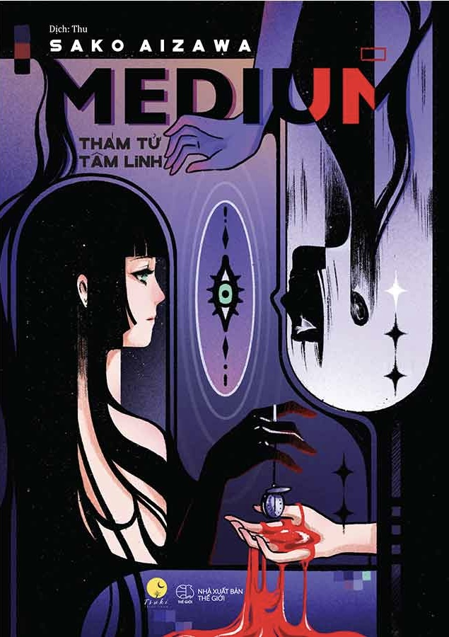

REVIEW SÁCH
Medium
Nhận xét của mình
Cuốn nay hay nha, cuốn này đặc biệt ở chỗ vừa có yếu tố điều tra vừa có yếu tố tâm linh. Vậy nên nó vừa bí ẩn mà cũng vừa logic theo kiểu của nó. Chuyện về một anh nhà văn trinh thám vô tình biết được một cô đồng và sau đó họ bắt đầu hợp tác và kết hợp ăn ý với nhau trong các vụ án. Những vụ án đầu đã thành công thể hiện khả năng tâm linh của cô đồng, cùng với đó là sự phát triển trong mỗi liên kết giữa hai người và một đoạn tình cảm chớm nở. Trong lúc đó thì có một vụ án giết người hàng loạt và nạn nhân là những cô gái trẻ, xinh đẹp, hung thủ chỉ đâm một nhát dao vào người nạn nhân rồi để họ chảy máu đến chết, và cảnh sát vẫn đau đầu trong công việc tìm kiếm địa điểm gây án của hung thủ cũng như điều tra về tên sát nhân bệnh hoạn này, và cô đồng cảm nhận được nguy hiểm ấy đang đến gần mình. Đây cũng là một cuốn sách mà mình không thể đoán được nó sẽ diễn biến như thế, twist rất hay và ấn tượng. Mình cũng rất recommend cho mọi người cuốn này nhé.
🛍️ Tìm mua cuốn sách
Bạn có thể tham khảo giá tại các nhà sách online: